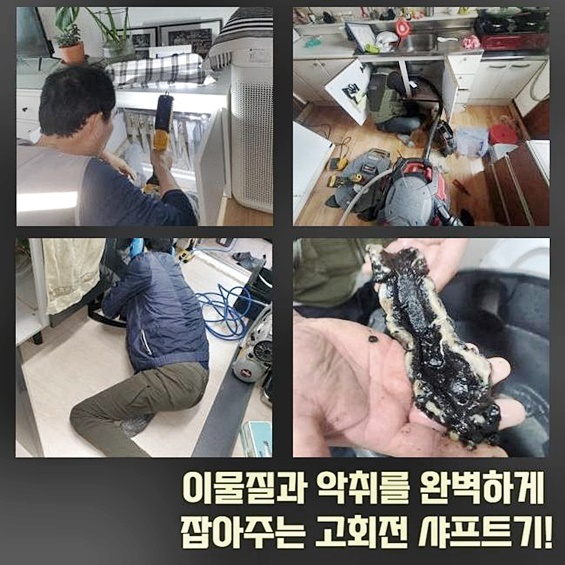
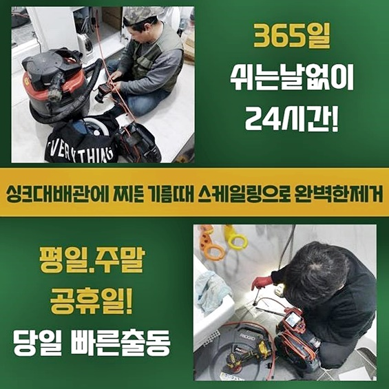
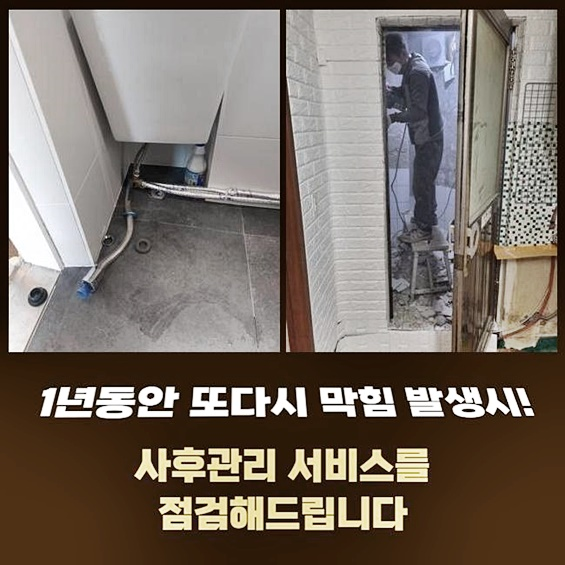
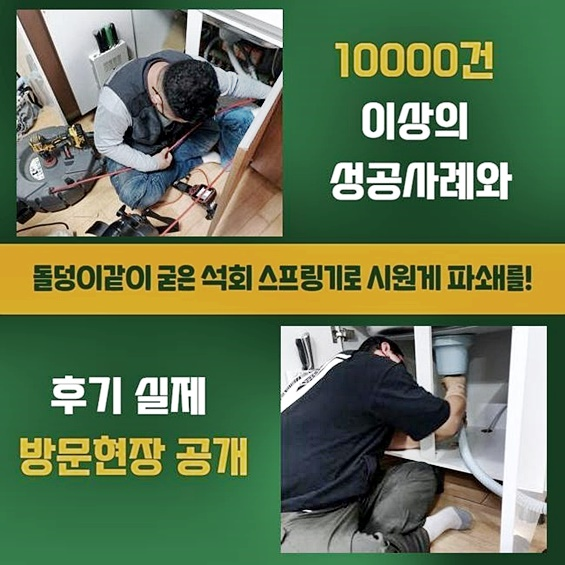
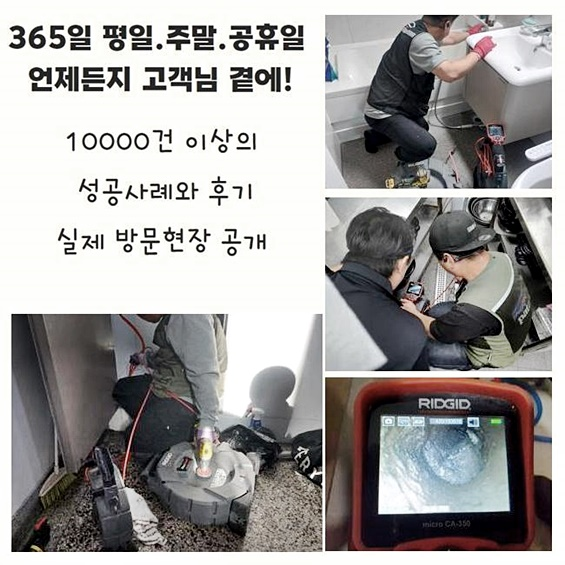
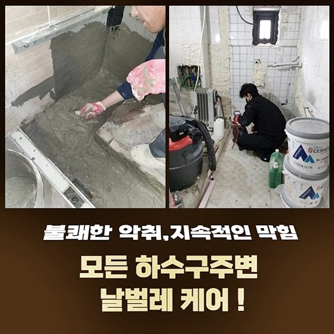
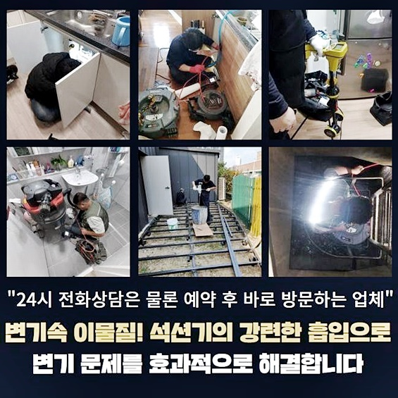

🏠 금천구 독산동화장실역류 시흥동 고압세척비용 설비출장
용인시 처인구 배관막힘 전문 시공 후기

📋 작업 개요
- 위치: 용인시 처인구, 수원시 영통구, 화성시 동탄
- 서비스 유형: 배관막힘, 하수구청소, 고압세척, 내시경점검
- 작업 일시:
- 업체명: 하수구수사대 (010-5615-2118)
🔍 문제 상황
금천구 독산동화장실역류 시흥동 고압세척비용 설비출장
막힘문제와 연관하여 작업사례를 통하여 설명드릴테니 꼼꼼히 읽어보시면 많은정보를 얻으실수있어요!
얼마전에 방문한사례로 주방부엌쪽에서 배수구가 막히는문제가 발현된경우가 있었죠
씽크대는종종 기름이물이 쌓이고쌓여 막히곤하는데 저희업체는 배관속을 꼼꼼히조사해 막힌이유가 뭔지 알아낸뒤 조치를 취해드리고있어요
현장을살폈더니 좋지못한 냄새까지 발현되고있었을 뿐아니라 물을이용하는것도 어려웠는데요
이러한경우 메인하수구에 이물이퇴적되서 배수시스템이 무너진것으로 판단할수있었어요
막히는문제들을 빠르게 해결해드리기위해 성심성의껏 배관시공을 착수하고있어요
오염물제거를 통하여 막힘을 해결해드리고 불편하셨던것들을 해소시켜 드리도록할게요
고압세척기계는 높은압력의 물을쏘아서 이물질들을 제거시키기에 정확한세척이 진행될수있어요
오염물질의 양이상당한 하수관을 확실하게 세척할때 활용하는데 이기계는 하수구청소시 정체증상을 처리하는데 효과적이에요
세척과정시 주변환경에 피해받지않게 비닐류를써서 피해가 가지않게끔 하고있어요
최첨단장비들로 배관기능의 무리가가지않게 하고있고 안전하게 사용되는데까지 기여해드립니다
배관의경우 각자다른 위치로 자리잡고있으나 이어져있으므로 배관막힘이 많이일어납니다

🔎 원인 분석
💡 전문가 진단: 정밀 진단 장비를 사용하여 슬러지의 고착 여부를 판명하고 타격/세척 작업을 실시했습니다.
배관주위를 살펴보니 머리카락과 기름때들이 들어차있는것을 확인이가능했죠
이럴때는 하수구카메라를 써서 확실한 점검이필요해요
공용관의경우 물길자체가 어느정도의 확보가되어 있었지만 공간이부족하여 배수상황에 영향을끼치고 있었어요
전체검사를 거쳐보니 간단히 잔해물을 제거시키는 기계보다는 배관고압세척이 효율적일거라고 예상해볼수가 있었답니다
의뢰자분께 의견을구한뒤 고압세척과정을 착수할수있었네요
하수구cctv를 투입하여 하수구안을 자세하게 체크해볼수있죠
오염물질때문에 하수관이 막혔을때는 이물제거작업이 필요하답니다
그렇지만 세척작업은 올바르게 진행하지못하면 하수구내부에 손상이생기고 결국에는 심각한경우로 이어질수가있죠
다양한 작업경력을 소유하고있는 전문기사들이 현장을 방문하여 점검을 진행하고있으니 하수구에 손상이생길까봐 걱정하지 않으셔도 되겠습니다
석션기계는 오염물을흡입하여 소거하는 장비인데요
석션과정으로 하수구속에 자리잡고있는 오염물들을 제거해내고 이물의형태를 확인할수있죠
샤프트기는 오염물을 배관벽면에서 떼어내고 굳은이물들을 없애는데 이용된답니다
이다음엔 내시경과정을 진행한뒤 안쪽상황이 어떤지 체크하여 적절한대처를 진행하면됩니다

🔧 작업 과정
내시경작업은 막혀버린 이유에있어서 파악하려면 꼭 진행해야할 사항입니다
하수구카메라로 들여다보았더니 막힌까닭이 잔해물질들이 배관안에 퇴적되어 막히게되었다는걸 알아낼수가 있었습니다
내시경장비끝에 작은촬영기가 달려있다보니 두눈으로 살필수없는 곳에다가 사용하고있습니다
막힘현상이 나타난곳과 이물의특징을 확실히 살필수가있어요
내시경카메라로 인하여 어떻게 작업할지에 대한 도움을줘요
그래서 막히는일이 발생하였다면 내시경도구를 써서 정확하게 점검해보는것이 중요사항중 하나라고할수있죠
오염물을 없애기위해 전문장비를 구비하여 하수구에서 발현된문제를 처리해보려고해요
여러번 말씀드렸지만 샤프트기끝에 달린사슬이 빙빙돌아가며 배관내부의 고착덩어리를 갈아내준답니다
저희들의경우 작업방식을 투명하게 공개하여 고객분들이 작업과정의 필요성에있어 이해시키고 신뢰하실수있게끔 신경을 쓰고있답니다
하수구를뚫을때 전문지식을 갖추고있지 않다면 되려배관에 손상문제를 일으킬수있기에 조심해주시길 바랍니다
전문가에게 맡기시면 별걱정없이 베테랑들이 작업을진행해 문제를처리하면 2차피해가 일어날일이 없도록 마무리될겁니다
다음현장은 화장실쪽 하수구에서 문제를보이는 장소에내방했죠
이번현장도 오염물질들로 인해서 막혀버린 곳이었죠
분해전용장비 샤프트설비를 이용하기로 결정했어요
악취문제가 동반되었다보니 하수도물길을 확보해 진행하기로했죠
가장효과적인 수리가진행될것을 기대할수가 있었는데요
오랜시간 다양한 오물들이 하수구아래쪽에 고이게되면서 문제가 나타났다는걸 파악했어요
여러번 말했지만 전문기술이 없을경우 어떤문제로인해 막혀버린것인지 알아내기란 어렵습니다
이렇다보니 저희들과같은 전문업체의 도움을 받아보셔야해요
빠르고정확하게 문제를타파해 쾌적한하수구로 제공해볼게요
같은문제로 고생하지않도록 예방조치또한 취하도록 하겠습니다


✅ 작업 완료
고객의만족을 우선순위로하는 서비스로 제공할게요
깨끗한 배관으로 만들어드리기위해 최선을다하여 시공에임할게요
해결하지않고 내버려두신다면 2차문제로 발발될수있으니 막힘징조가 나타나게되었을때 대처하시는것이 좋겠습니다
전국어디든지 1시간안팎으로 방문이가능하며 하수구전용 장비들까지 보유하고있으니 편하실때 문의주세요
이밖에도 궁금증이 풀리지않으신게 있다면 마음편히 전화주신다면 친절히 상담진행하도록 할게요!
하수구가 막혔다면 저희들과함께 헤쳐나가봐요!




⚠️ 하수구 배관 막힘 예방 및 관리 가이드
- ✅ 머리카락, 비닐, 물티슈 등 물에 분해되지 않는 이물질은 절대 흘려보내지 마세요.
- ✅ 기름기 많은 식기는 설거지 전 키친타올로 먼저 기름때를 닦아내세요.
- ✅ 주기적으로 배수구에 뜨거운 물을 가득 부어주어 유지방 고착을 방지하세요.
- ✅ 작업 후 1년 이내 재발 시 무상 A/S 보증 서비스를 제공합니다.
💡 핵심 정리
- 확실한 장비 작업(내시경 점검 및 샤프트 스케일링)으로 원인을 뿌리 뽑습니다.
- 작업 후 1년 이내에 동일한 부위 재발 시 100% 무상 A/S 서비스를 보장합니다.
- 서울 · 경기 · 인천 전 지역에 24시간 언제든 긴급 출동할 수 있도록 항시 대기 중입니다.
❓ 자주 묻는 질문 (FAQ)
🚨 용인시 처인구 배관막힘 문제로 고민이신가요?
정확한 원인 진단과 확실한 시공으로 재발 없는 해결을 약속드립니다.
24시간 긴급 출동 | 서울 · 경기 · 인천 전지역 | 1년 내 재발 시 무상 A/S